TEREPASZTAL / COZY WORLD / V3A railway that belongs in its landscape.
Ten actual game views · Normally generated 128 × 128 map · Seed 7412 · All six biomes.
Continuous ground, irregular transitions and connected hills. Larger tree variants, softer building contact edges, taller water-tower supports and a smaller kiln. Warm windows, rain and mist.
The game now opens with the original Pastoral Pulse, then shuffles all four arrangements. Nature and weather sounds have their own volume control. Music begins after a click or keypress in the game.
Windows at night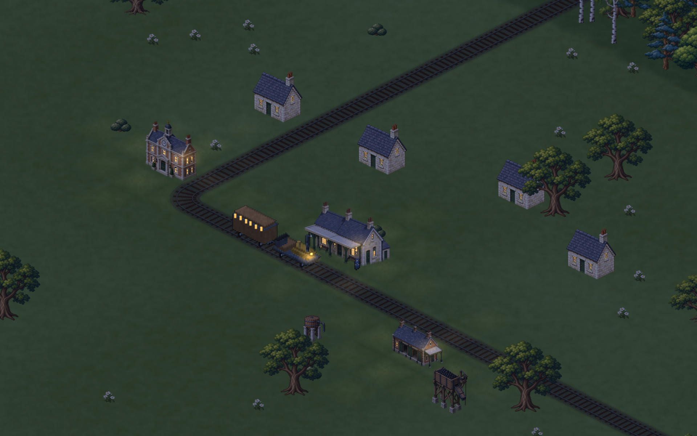
Town station · small ground patches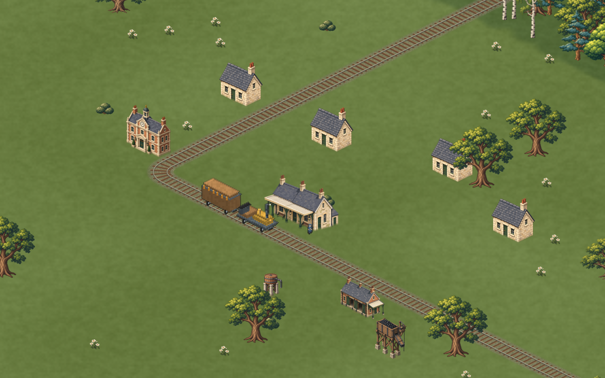
Industry · terrain at the building bases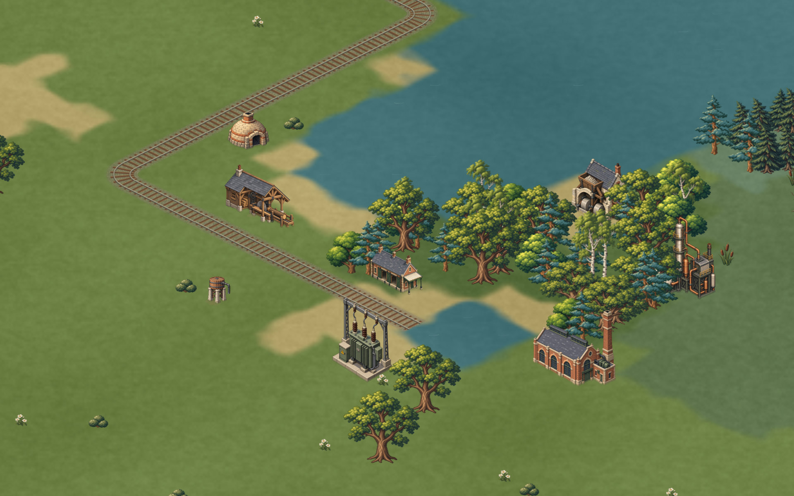
Farm halt · natural vegetation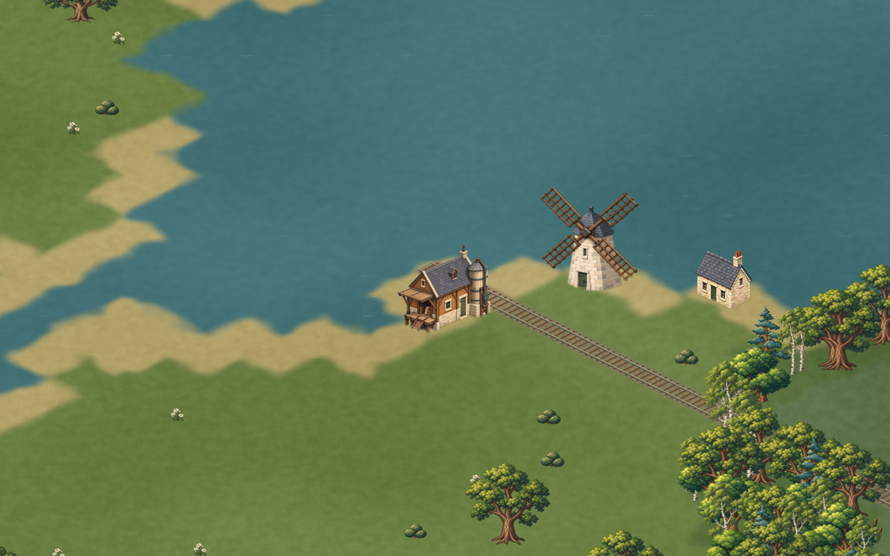
Rain at the station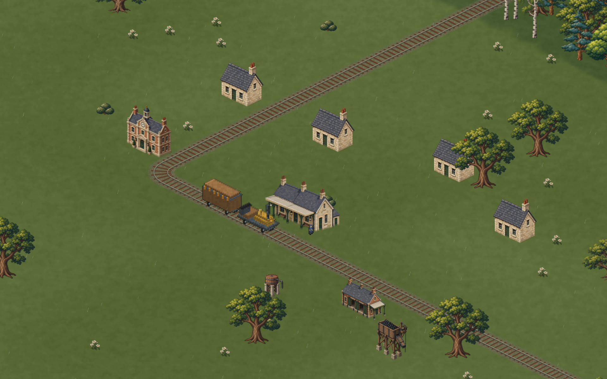
Mist among the trees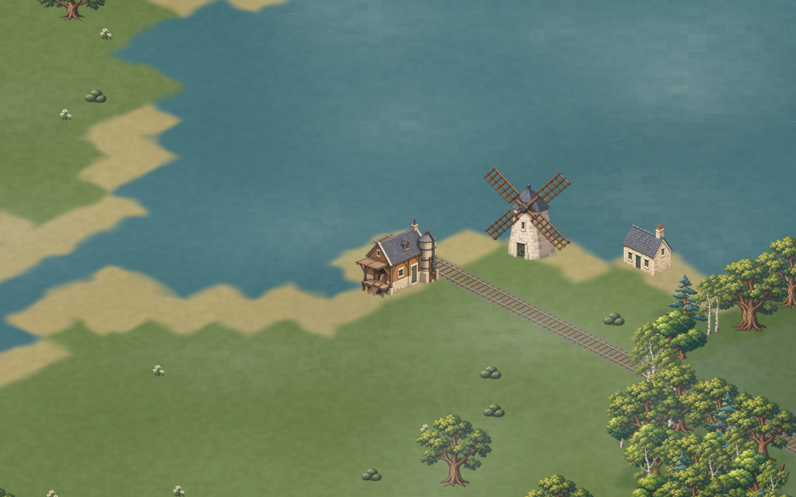
Hills joining into mountains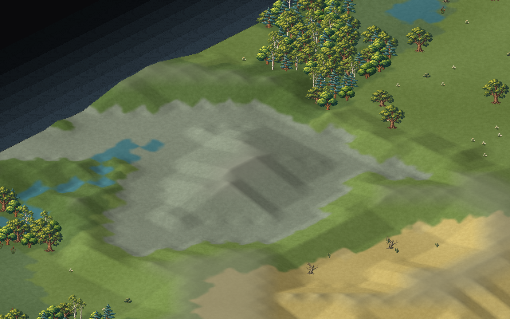
Rails blending with their underlying tiles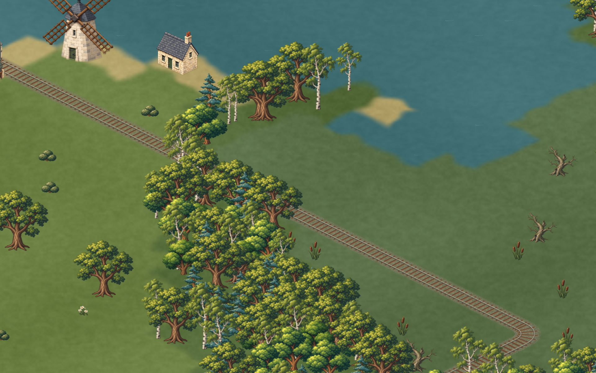
Railway through the generated landscape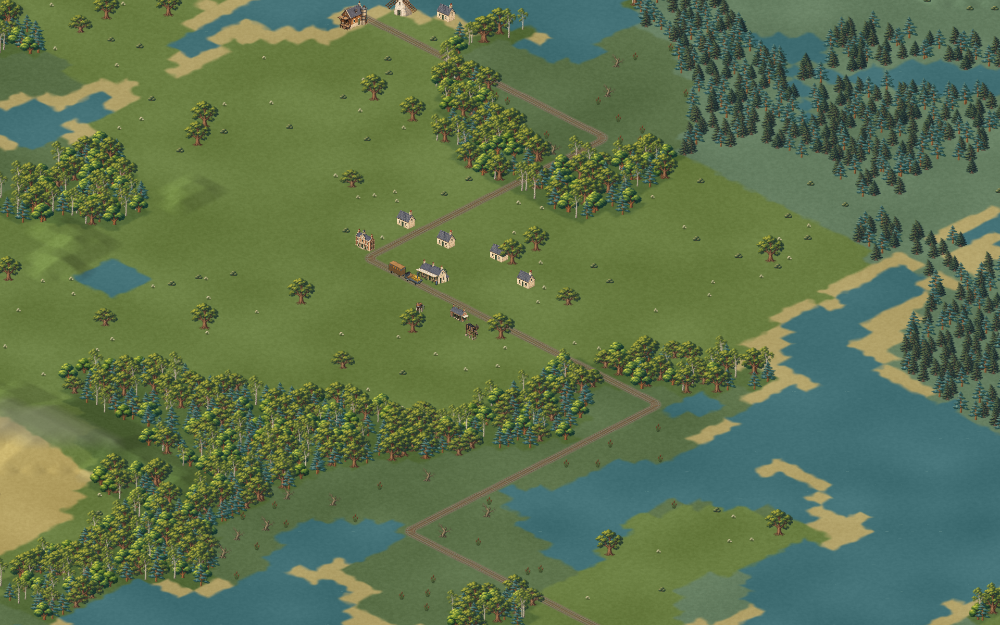
Generated 128 × 128 map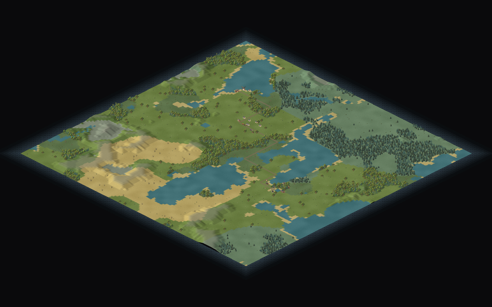
Normal play screen · production build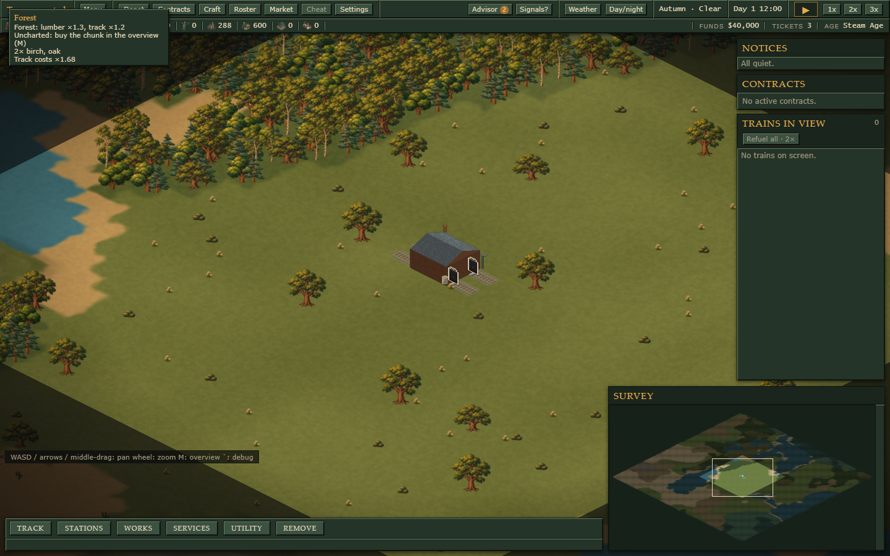
The shared human/door scale is enforced for calibrated building families and their levels. Equipment without a measured reference remains explicitly estimated. These screenshots use the production assets; the earlier reconstructed Rocket remains a separate QA candidate.
Review notes · Browser checks · Moving-train checks